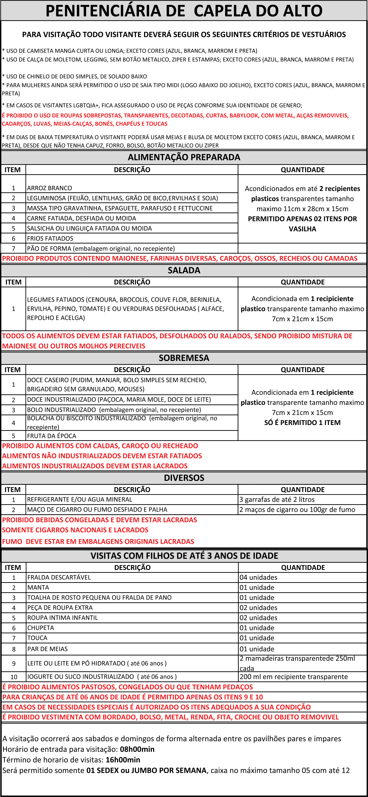

Orientações para o Dia de Visita
Documentações Necessários para o Dia da Visitação
- Documento de identificação civil com foto e dentro do prazo de validade (Obrigatório);
- Carteirinha de Visitação desta unidade prisional (Obrigatório);
- Caderneta de Gestante;
NÃO será permitida a entrada do visitante sem a apresentação do documento com foto e da carteirinha. A carteirinha de visitação será entregue na primeira visita, sendo recomendada a plastificação para maior durabilidade.
Alimentação e Vestimenta


Atualizado dia 26/10/2022